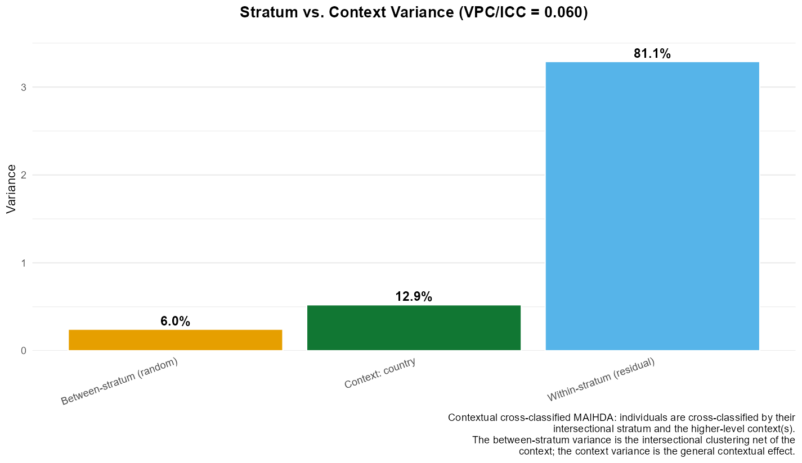
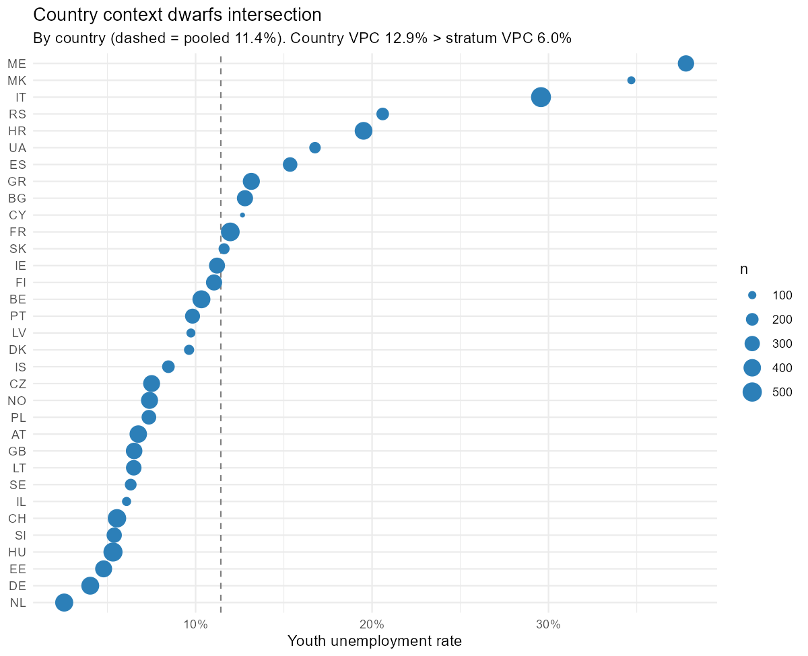
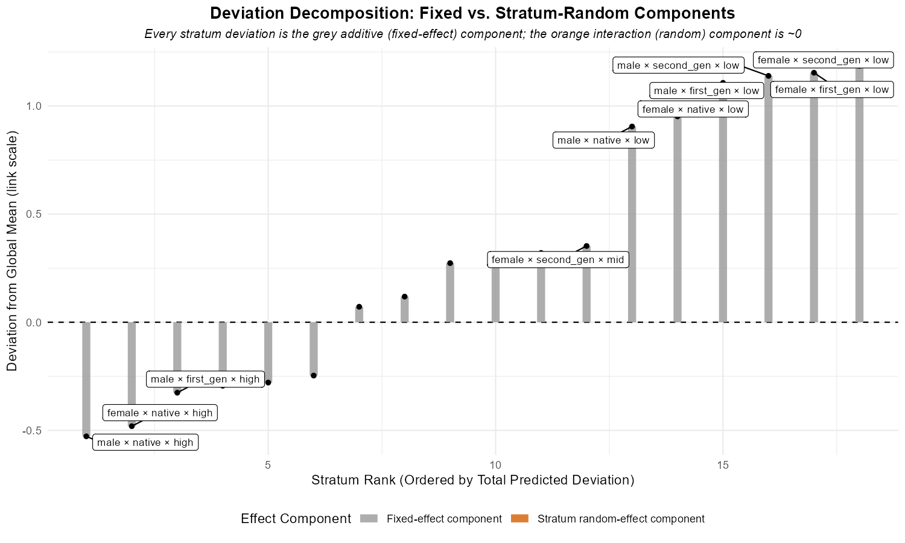
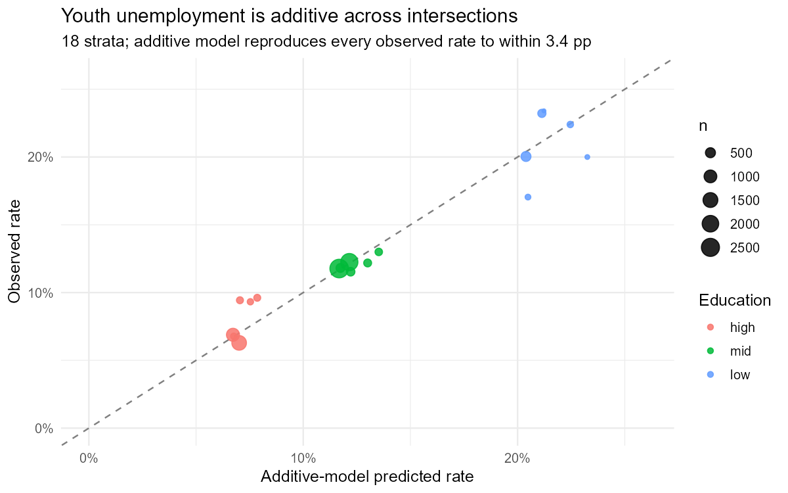
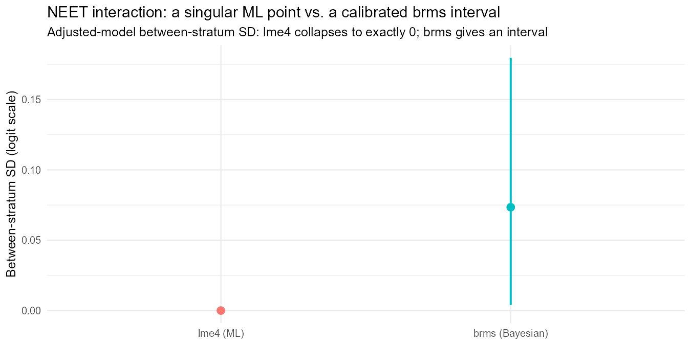

Case study: youth unemployment across Europe (ESS)
Hamid Bulut
2026-06-17
Source:vignettes/ess_youth_unemployment.Rmd
ess_youth_unemployment.RmdWhat this case study does
The other vignettes explain MAIHDA’s machinery on data chosen to
teach it. This one goes the other way: it takes a real, contested
empirical question – how intersectional is youth unemployment in
Europe? – and walks the full MAIHDA workflow on real survey data,
reporting what it finds, including where the honest answer is “we cannot
tell”. It leans on, rather than repeats, the method vignettes: see
vignette("cross_classified") for the contextual design used
here, vignette("binary_outcomes") for discriminatory
accuracy, and vignette("bayesian_sparse_maihda") for the
singular-fit problem that returns at the end.
The headline is deliberately undramatic and is the point of the exercise: MAIHDA reveals a strong intersectional gradient in youth unemployment, finds it essentially additive rather than multiplicative, and – on a harder outcome – shows why a single-number interaction estimate should not be trusted. Additivity is not the absence of intersectionality; it is an empirical result about its form, and it is the form most MAIHDA studies report.
Data
The data are the European Social Survey, integrated files for Rounds 9-11 (2018-2022), pooled. The analysis sample is 10,114 economically active young people aged 15–29 across 33 countries. “Economically active” is the ILO labour-force base – in paid work, or unemployed and actively looking – which is the youth-unemployment-rate denominator and which excludes students, so completed education is meaningful. The pooled unemployment rate is 11.4%.
The intersectional strata cross three dimensions into 18 strata:
- gender (male / female),
- migration background (native / second-generation / first-generation, from the respondent’s and parents’ country of birth),
- education (low / medium / high, ES-ISCED collapsed).
Every stratum holds at least 47 people, so the between-stratum
variance is well estimated – this is not the sparse regime of
vignette("bayesian_sparse_maihda").
# The ESS microdata is licence-restricted; download the integrated .dta files into
# data-raw/ess/ (see data-raw/ess/README.md) and run data-raw/fetch_ess_youth.R,
# which builds the analysis frame `ess_youth` used below.The design: country as context, not stratum
Youth unemployment ranges from under 3% to nearly 40% between countries, so country cannot be ignored. But country-by-stratum cells are thin, so folding country into the strata would force the analysis into the sparse regime. The contextual cross-classified MAIHDA solves this: country enters as a crossed random intercept, estimated from 33 well-populated levels, while the intersectional strata stay clean.
au <- maihda(unemployed ~ gender + migration + education + (1 | gender:migration:education),
data = ess_youth, context = "country", family = "binomial",
response_vpc = TRUE)What MAIHDA reveals: a real intersectional gradient

The variance partition puts 6.0% of the (latent-scale) variation between intersectional strata and 12.9% between countries – the contextual effect is about twice the intersectional one. The strata are far from inert, though: the discriminatory accuracy is AUC = 0.735 with a median odds ratio of 1.60 (1,156 unemployed vs. 8,958 employed). An AUC of 0.74 is high by MAIHDA standards: knowing only a young person’s gender, migration background and education separates the unemployed from the employed fairly well. That separation – a 3–4× spread in risk across strata – is the intersectional inequality, and MAIHDA has surfaced it.

Additive or multiplicative?
The substantive intersectionality question is whether the multiply-disadvantaged are worse off than the sum of their disadvantages – a genuine interaction – or merely the sum of them. The two-model PCV answers it: the additive main effects of gender, migration and education explain 100.0% of the between-stratum variance.

A PCV at the ceiling, with a singular adjusted fit, could be
the over-shrinkage artefact of
vignette("bayesian_sparse_maihda"). Here it is not – it is
corroborated two ways that do not depend on the random-effect
machinery:
- a shrinkage-free likelihood-ratio test of the full three-way interaction against the additive model is non-significant (χ² = 5.9, 12 df, p = 0.923; AIC prefers the additive model), and
- the additive model reproduces every one of the 18 observed stratum rates to within 3.4 percentage points:

So a low-educated migrant woman is at high risk – but almost exactly the risk that adding “female”, “migrant” and “low-educated” predicts, with no extra multiplicative penalty. Education dominates the gradient; gender and migration add modestly. This mostly-additive pattern is the rule across the MAIHDA literature, not an anomaly.
A harder probe: NEET and the migrant-women hypothesis
Unemployment-among-the-active excludes the inactive, and intersectionality theory locates one of its clearest predictions there: young migrant women drawn into home/care roles. The NEET indicator (not in employment, education or training), measured on all 20,602 young people (rate 15.8%), pulls that channel back in. The raw gender-by-migration NEET rates show exactly the predicted shape:
| native | second_gen | first_gen | |
|---|---|---|---|
| male | 12.7% | 13.4% | 13.6% |
| female | 18.2% | 17.9% | 22.3% |
Migration barely moves NEET for men or for native/second-generation women – and then first-generation migrant women jump. A joint likelihood-ratio test of the two-way interactions is borderline-significant (χ² = 15.9, 8 df, p = 0.045). There is, at least, a hint of a genuine interaction here.
The trap, and the honest answer
What does the MAIHDA decomposition make of that hint? With
engine = "lme4", nothing: the adjusted NEET model is
singular, the interaction variance pinned to exactly
zero, PCV = 100.0% – the hint vanishes, reported as certain additivity.
With only 18 strata, an interaction variance this small is at
the edge of what maximum likelihood can estimate, and it fails silently.
This is the same failure as
vignette("bayesian_sparse_maihda"), now on real data.
A Bayesian refit with a mildly-informative prior is the fix. It does not manufacture an effect the data cannot support; it replaces the singular point with an honest interval.
# Precomputed in data-raw/precompute_youth_vignette.R (brms needs Stan and is slow).
f_adj <- brm(neet ~ gender + migration + education + (1 | stratum) + (1 | country),
family = bernoulli(), data = ess_youth_neet,
prior = c(prior(normal(0, 1), class = "b"),
prior(normal(0, 0.5), class = "sd")),
chains = 4, iter = 4000, warmup = 1500, control = list(adapt_delta = 0.95))
Two things change. The adjusted between-stratum interaction SD is no longer a singular zero but a credible interval, 0.073, 95% CrI [0.004, 0.180] – small, with a lower bound near the floor. And the explicit migrant-women interaction carries an odds ratio of 1.19 with a 89% posterior probability of being a penalty, but a 95% credible interval (0.90–1.57) that still spans 1. (Sampler: max R-hat 1.004, 0 divergences.)
| interaction term | OR (median) | OR 2.5% | OR 97.5% | P(OR > 1) |
|---|---|---|---|---|
| female x second_gen | 0.894 | 0.701 | 1.150 | 0.188 |
| female x first_gen | 1.187 | 0.899 | 1.571 | 0.887 |
The honest reading is suggestive, not confirmed.
There is roughly a four-in-five posterior chance that first-generation
migrant women carry a NEET penalty beyond additivity, but the interval
crosses one, so it cannot be asserted. Crucially, that is a
defensible summary; the singular lme4 zero was
not. The interval is what brms contributes, exactly as in
the sparse-data vignette.
Takeaways
- MAIHDA revealed the intersectional structure of European youth unemployment: a strong gradient (3–4× across strata) with real discriminatory accuracy (AUC 0.74), dominated by education and overlaid on a still-larger cross-country contextual effect.
- That inequality is additive, not multiplicative – corroborated by the PCV, a shrinkage-free interaction test, and the raw rates. Additivity is an intersectionality finding; it adjudicates the additive-vs-multiplicative debate that the theory leaves open, and lands where most MAIHDA applications do.
- On NEET, where theory predicts a migrant-women interaction, the data
give a hint that the variance decomposition can only summarise honestly
with a Bayesian interval – a worked reminder not to
read a singular
lme4interaction of zero as evidence of none.
Caveats and reproducibility
The ESS microdata is licence-restricted and is not
distributed with the package; only these derived summaries and figures
are. The analysis is unweighted (ESS
design/post-stratification weights could be added via
engine = "wemix"); pools three rounds without a period
term; covers 33 ESS countries (which include non-EU members, so “Europe
(ESS)” is not the EU-27); and rests on 18 strata, few enough that the
interaction variance is hard to estimate – the very point of
the final section. To reproduce: download the ESS Round 9–11 integrated
files into data-raw/ess/, then run
data-raw/fetch_ess_youth.R and
data-raw/precompute_youth_vignette.R. ```